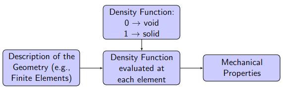

TOPOLOGICAL OPTIMIZATION
This is a mathematical method used to determine the optimum distribution of materials in a given volume, while respecting specific constraints. This approach is based on topological principles, which study the properties of shapes and spatial configurations.
In the context of topological optimization, the aim is to find the most efficient arrangement of materials within a defined region, in order to maximize the performance of the system or structure while minimizing the use of resources. This can include objectives such as weight reduction, optimizing stiffness or strength, or minimizing manufacturing costs.
Our approach involves the formulation of a mathematical optimization problem in the form of the SIMP method.
SIMP(Solid Isotropic Material with Penalisation)
Solid Isotropic Material with Penalization (SIMP) is a method commonly used in topological optimization to represent the distribution of materials in a given volume. This method is based on an effective density approach, where materials are considered to be present or absent in each finite element of the structure.
By integrating NURBS into the SIMP-based topological optimization process, complex geometries can be modeled with high accuracy while simultaneously optimizing material distribution to achieve lightweight, efficient designs. This combination of techniques makes the most of the advantages of NURBS's precise geometric representation, while optimizing structural performance through SIMP's efficient topological optimization approach.
NURBS(Non-Uniform Rational B-Splines)
The NURBS surface is defined as:
\begin{equation*} S(u,v) = \sum_{i=0}^{n_u} \sum_{j=0}^{n_v} R_{i,j}(u,v) P_{i,j} \end{equation*} where:
- \( R_{i,j}(u,v) \): Piecewise Rational Basis Functions
-\(P_{i,j}= x_{i,j} , y_{i,j}, z_{i,j}\): Control Points
\begin{equation*} R_{i,j}(u,v) = \frac{N_{i,p}(u)N_{j,q}(v)w_{i,j}}{\sum_{k=0}^{n_u} \sum_{l=0}^{n_v} N_{k,p}(u)N_{l,q}(v)w_{k,l}} \end{equation*} where:\
- \(N_{i,p}(u), N_{j,q}(v)\): Blending Functions- \(p\) and \(q\): NURBS Degrees along \(u\) and \(v\) directions
\(w_{i,j}\): Weights
\begin{equation*} N_{i,0}(u) = \begin{cases} 1 & \text{if } U_i \leq u < U_{i+1} \\ 0 & \text{otherwise} \end{cases} \end{equation*} \begin{equation*} N_{i,p}(u) = \frac{u - U_i}{U_{i+p} - U_i} N_{i,p-1}(u) + \frac{U_{i+p+1} - u}{U_{i+p+1} - U_{i+1}} N_{i+1,p-1}(u) \end{equation*}Exemple of NURBS


SIMP Method for Minimum Compliance Problem
The optimisation problem can be resumn like that
Problem definition
The SIMP method, in conjunction with NURBS, is coded in Python, and its simple, concise syntax offers great flexibility and advanced functionality thanks to its multiple libraries. However, since its use in memory is uncontrolled, very large pieces of code are often difficult to execute.
As a result, switching to C is a more reliable solution, since it has controlled memory and offers the possibility of developing parallelism (which is also present in Python, of course).